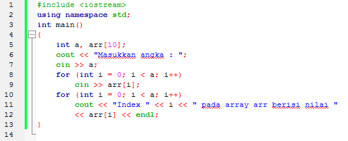

<!DOCTYPE html><html><head><meta charset="utf-8"><meta name="viewport" content="width=device-width, initial-scale=1, maximum-scale=1"><title>Tugas Proyek Teknologi Kolaborasi Perangkat Lunak</title><link rel="stylesheet" type="text/css" href="bower_components/prism/themes/prism.css"><link rel="stylesheet" type="text/css" href="bower_components/todc-bootstrap-main/dist/css/bootstrap.min.css"><link rel="stylesheet" type="text/css" href="styles/main-presentation.css"></head><body></body></html><!DOCTYPE html><html><head><meta charset="utf-8"><meta name="viewport" content="width=device-width, initial-scale=1, maximum-scale=1"><title>Tugas Proyek Teknologi Kolaborasi Perangkat Lunak</title><link rel="stylesheet" type="text/css" href="bower_components/todc-bootstrap-main/dist/css/bootstrap.min.css"><link rel="stylesheet" type="text/css" href="styles/main.css"></head><body></body></html><nav role="navigation" class="navbar navbar-default"><div class="container"><div class="navbar-header"><button type="button" data-toggle="collapse" data-target="presentation-chooser" class="navbar-toggle"><span class="sr-only"></span><span class="icon-bar"></span><span class="icon-bar"></span><span class="icon-bar"></span></button><a href="index.html" class="navbar-brand"> Tugas Proyek Teknologi Kolaborasi Perangkat Lunak	</a></div></div></nav><article id="presentation"><section><h2>Pengenalan Bahasa Pemrograman C++ Dasar</h2><h3>Created By :</h3><ul><li></li><li>Mustafa Salim</li><li>Kevin Bowie</li><li>Alvin Yaputra</li><li>Tommy</li></ul></section><section><h1>Deskripsi</h1><ul><li></li><li>Berisi Syntax-syntax dasar penggunaan bahasa pemograman C++</li><li>Penggunaan compiler yang disarankan adalah CodeBlocks</li></ul></section><section><h1>Materi Pembelajaran</h1><ul><li></li><li>:: Sintaks Dasar ::</li><li>:: Tipe Data ::</li><li>:: Percabangan ::</li><li>:: Perulangan ::</li><li>:: Array ::</li><li>:: String ::</li><li>:: Struct ::</li><li>:: Vector ::</li><li>:: Algorithm ::</li></ul></section><section><h1>Sintaks Dasar</h1><ul><li></li><li>Dalam pemrograman C++ terdapat dua style penulisan</li></ul><h3></h3><ul><li>:: C Style ::</li><li>:: C++ Style ::</li></ul></section><section><h1>C Style</h1><h2>Library yang dibutuhkan dalam penulisan "C Style" :</h2><h2>#include &#60cstdio></h2><h3></h3><ul><li></li><li>Di dalam "cstdio" terdapat beberapa fungsi :</li><li>scanf --> untuk membaca format data dari stdin</li><li>printf --> untuk menampilkan format data ke stdout</li><li>sscanf --> untuk membaca format data dari string</li><li>sprint --> untuk menulis format data ke string</li><li>dan lain sebagainya..</li></ul></section><section><h2>Contoh Penggunaan C Style</h2><h2>Hasil Keluaran</h2></section><section><h1>C++ Style</h1><h2>Library yang dibutuhkan dalam penulisan "C++ Style" :</h2><h2>#include &#60iostream></h2><h3></h3><ul><li></li><li>Di dalam "iostream" terdapat beberapa fungsi:</li><li>cin --> fungsi masukan (menyimpan data dalam suatu variabel)</li><li>cout --> fungsi keluaran (menampilkan data ataupun tulisan)</li><li>Endl --> Untuk memasuki satu baris baru / enter</li><li>Ends --> Fungsi manipulator yang untuk menambah karakter null (nilai ASCII NOL) ke deretan suatu karakter. </li></ul></section><section><h2>Contoh Penggunaan C++ Style</h2><h2>Keluaran</h2></section><section><h1>Variabel(case-sensitive)</h1><ul><li></li><li>Deklarasi variabel:</li><li>int umur;</li><li></li><li>Definisi variabel (harus setelah deklarasi):</li><li>umur = 29;</li><li></li><li>Gabungan (deklarasi dan definisi):</li><li>int umur = 29;</li></ul></section><section><h1>Tipe Data</h1></section><section><h1>Lanjutan Tipe Data</h1><a>http://msdn.microsoft.com/en-us/library/s3f49ktz.aspx</a><h3></h3><a>www.cplusplus.com/doc/tutorial/variables/</a><h3>dan sebagainya...</h3></section><section><h1>Percabangan</h1><ul>		<li></li><li>Percabangan merupakan statement yang wajib diketahui oleh semua programmer...</li></ul><h2></h2><ul><li>Di dalam pemrograman C++ terdapat dua cara penggunaan :</li></ul><h2></h2><ul><li>:: If ... Else  Statement ::</li><li>:: Switch ... Case Statement ::</li></ul></section><section><h2>Contoh Penggunaan If-Else Statement</h2><h2>Dan</h2></section><section><h2>Contoh Lain If Statement</h2></section><section><h2>Percabangan Bersarang</h2><h3>syntax :</h3></section><section><h2>Contoh Percabangan If-Statement</h2></section><section><h2>Contoh Penggunaan Switch-Case Statement</h2></section><section><h1>Perulangan</h1><ul><li></li><li>Perulangan juga merupakan statement yang wajib diketahui ...</li></ul><h2></h2><ul><li>Di dalam pemrograman C++ terdapat tiga cara penggunaan :</li></ul><h2></h2><ul><li>:: For ... Statement ::</li><li>:: While ... Statement ::			</li><li>:: Do ... While Statement ::</li></ul></section><section><h2>For ... Statement</h2><h3>Syntax :</h3></section><section><h2>Contoh Penggunaan Perulangan For</h2><h3>Keluaran</h3></section><section><h2>Perulangan While</h2><h3>Syntax :</h3></section><section><h2>Contoh Penggunaan Perulangan While</h2><h3>Keluaran</h3></section><section><h2>Perulangan Do ... While</h2><h3>Syntax :</h3></section><section><h2>Contoh Penggunaan Perulangan Do ... While</h2><h3>Keluaran</h3></section><section><h1>Array</h1><ul><li></li><li>Tipe data terstruktur yang dipakai untuk menyimpan sekumpulan item data yang mempunyai tipe data sejenis.</li></ul><h2></h2><ul><li>Untuk mengakses item data, digunakan penunjuk/index.</li></ul><h2></h2><ul><li>Terdiri dari 2 Jenis Array :</li><li>:: Array 1 Dimensi ::</li><li>:: Array Multidimensi ::</li></ul></section><section><h1>Array 1 Dimensi</h1><h3>Syntax :</h3><ul><li>Tipe_Data Variabel[value];</li></ul><h3>Contoh :</h3><ul><li>int angka[10];</li><li>char huruf[10];</li></ul></section><section><h2>Contoh Penggunaan Array 1 Dimensi</h2><h3>Keluaran</h3></section><section><h1>Array Multidimensi</h1><h3>Syntax :</h3><ul><li>Tipe_Data Variabel[value_1][value_2]...[value_n]</li></ul><h3>Contoh :</h3><ul><li>int angka[10][5];</li><li>char kode[2][5][2];</li></ul></section><section><h2>Contoh Penggunaan Array Dua Dimensi</h2></section><section><h2>Keluaran</h2></section><section><h1>String</h1><ul><li></li><li>Bentuk data yang biasa dipakai dalam bahasa pemrograman untuk keperluan menampung dan memanipulasi data teks, misalnya untuk menampung (menyimpan) suatu kalimat atau karakter.</li><br><li>Merupakan kumpulan dari array dengan tipe data char.</li><br><li>Sederetan simbol yang tak tertentu panjangnya, yang dianggap sebagai panjang satu unit</li><br><li>Berupa huruf, angka, karakter khusus, maupun karakter Unicode</li><br><li>Terdapat beberapa fungsi yang digunakan untuk operasi pengolahan string</li></ul></section><section><h2>Fungsi String pada C++ Style</h2><ul><li></li><li>o Fungsi size / length<ul><li>Mengembalikan panjang karakter suatu string</li></ul></li><li>o Fungsi insert<ul><li>Menyisipkan karakter-karakter ke dalam string</li></ul></li><li>o Fungsi erase<ul><li>Menghapus karakter tertentu pada string</li></ul></li><li>o Fungsi clear<ul><li>Menghapus string</li></ul></li><li>o Fungsi substr<ul><li>Mengenerate substing dari string</li></ul></li><li>o Fungsi operator+<ul><li>Mengabungkan string-string</li></ul></li><li>o Fungsi getline<ul><li>Membaca baris dari stream ke dalam string</li></ul></li></ul></section><section><h2>Cara Input String pada C++ Style</h2><h3>Keluaran</h3></section><section><h2>Fungsi String pada C Style	</h2><ul><li></li><li>o Fungsi strcat<ul><li>Menggabungkan dua string menjadi satu.</li></ul></li><li>o Fungsi strlen<ul><li>Menghitung panjang karakter pada suatu string. Fungsi bertipe data integer.</li></ul></li><li>o Fungsi strcpy<ul><li>Menyalin isi string ke suatu variabel.</li></ul></li><li>o Fungsi strupr (Uppercase)</li><li>o Fungsi strlwr (Lowercase)</li></ul></section><section><h2>Cara Input String pada C Style</h2><h3>Keluaran</h3></section><section><h1>Struct</h1><ul><li></li><li>Digunakan untuk menampung beberapa variabel dengan tipe data yang berbeda dalam 1 nama variabel.</li><li>Berguna jika penggunaan variabel sudah kompleks dan besar.</li><li>Biasanya dikelompokkan berdasarkan kesamaan sifat dasar.</li><li>Contohnya didalam struct Mahasiswa terdapat variabel nama, nim, dll dengan masing-masing varibel mempunyai tipe data yang berbeda.</li></ul></section><section><h1>Struct</h1><h3>Syntax :</h3><h3>Contoh :</h3></section><section><h1>Prosedur dan Fungsi</h1></section><section><h2>Prosedur</h2><ul><li>Prosedur merupakan sebuah blok kode yang melakukan operasi yang telah didefinisikan, akan tetapi tidak mengembalikan suatu nilai</li></ul><h3>Syntax :</h3><h3>tanpa parameter</h3><ul>		<li>void nama_prosedur()</li></ul><h3>dengan parameter</h3><ul><li>void nama_prosedur(type_data parameter_1, ...,  type_data parameter_n)</li></ul></section><section><h2>Contoh Penggunaan Procedure</h2><h3>Syntax :</h3><h3>Keluaran :</h3></section><section><h2>Function</h2><ul><li></li><li>Fungsi adalah blok kode yang dapat dipanggil untuk mengerjakan suatu tugas tertentu dan menghasilkan nilai kembalian.</li></ul><h3></h3><ul><li>Perbedaannya dengan Prosedure adalah sebuah function akan mengembalikan sebuah nilai balik pada pemanggilnya, sehingga pemanggil sebuah function harus memiliki penampung dari hasil function</li></ul><h3></h3><ul><li>Penampungan tersebut dapat berupa sebuah variable atau lainnya. Biasanya function dibuat untuk kode program perhitungan, atau kode program lain yang akan melakukan pengembalian nilai data.		</li></ul></section><section><h2>Contoh Penggunaan Function</h2><h3>Syntax :</h3><h3>Keluaran :</h3></section><section><h1>Rekursif</h1><ul><li></li><li>Merupakan fungsi yang memanggil dirinya sendiri.</li><li>Biasanya digunakan untuk menyelesaikan masalah yang dapat dipecah-pecah menjadi sub-problem.</li><li>Ada 2 bagian penting dalam rekursif</li><li>1. Base Case -> Bagian batas dasar rekursif akan berhenti.</li><li>2. Rekursive Case -> bagian dimana fungsi akan memanggil dirinya sendiri lagi.</li></ul></section><section><h1>Lanjut sini ya</h1><h2>To Tommy / Mustafa / Alvin</h2></section></article><script src="bower_components/bespoke.js/dist/bespoke.min.js"></script><script src="bower_components/bespoke-bullets/dist/bespoke-bullets.min.js"></script><script src="bower_components/bespoke-scale/dist/bespoke-scale.min.js"></script><script src="bower_components/bespoke-hash/dist/bespoke-hash.min.js"></script><script src="bower_components/bespoke-progress/dist/bespoke-progress.min.js"></script><script src="bower_components/bespoke-state/dist/bespoke-state.min.js"></script><script src="bower_components/prism/prism.js"></script><script src="bower_components/prism/components/prism-bash.min.js"></script><script src="scripts/main.js"></script><script src="bower_components/jquery/jquery.min.js"></script><script src="bower_components/todc-bootstrap-main/dist/js/bootstrap.min.js"></script>